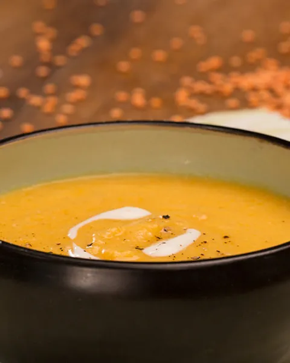
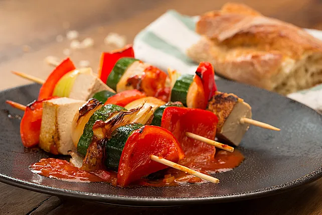

Vegetarische Rezepte
Kartoffelsalat

Ein leckeres Rezept für einen klassischen Kartoffelsalat.
2 kg Kartoffeln, festkochende
1 m.-große Zwiebel(n), feinst gewürfelte
250 ml Gemüsebrühe oder Geflügelbrühe
3 EL Weißweinessig, milder, z. B. Marc de Champagne
2 EL Dijonsenf mit grünem Pfeffer
200 g Mayonnaise, selbstgemachte oder wirklich gutes Fertigprodukt
6 kleine Gewürzgurke(n), fein geschnittene
etwas Gurkenflüssigkeit
Linsensuppe
Eine herzhafte Suppe aus Gemüsebrühe, Linsen und einer
Vielzahl von Gemüsesorten wie Karotten, Sellerie und Tomaten.
1 Dose Pizzatomaten, ca. 400 g
1 Dose Kokosmilch, ca. 400 g
1 Zwiebel(n)
175 g Linsen, rote
3 TL Chilipulver
2 TL Kurkumapulver
600 ml Gemüsebrühe
Sonnenblumenöl zum Braten
Salz
Veggie-Schaschlik
Vielfalt an frischem Gemüse und optional Tofu.
2 kleine Zucchini
10 Champignons
2 Zwiebel(n), rote
1 Paprikaschote(n), rote
1 Paprikaschote(n), gelbe
Für die Marinade:
2 EL Sojasauce
2 EL Sesamöl
½ TL Chiliflocken
1 EL Ingwerwurzel, frisch gerieben
1 Knoblauchzehe(n)
1 EL Zitronensaft
1 EL Zucker
1 EL Tomatenmark